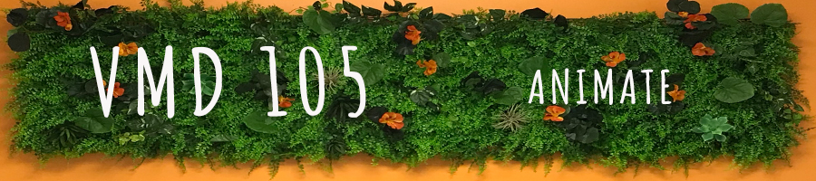

I was surprised and delighted that animation was part of our curriculum. Animate takes the arduous and laborious art of hand drawn animation and expedites it with “digital magic.” I used the vector image I created in illustrator to riff on the dark humor I tried to convey.